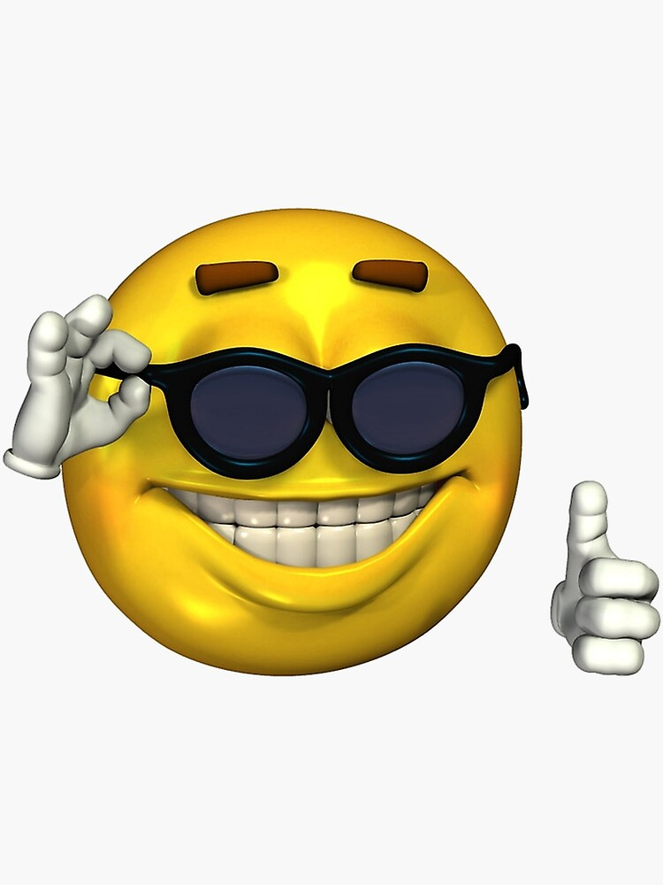

Welcome to My Website
Welcome to my personal website for COP4813 Web Programming. This website will be used to demonstrate the web development skills that I learn throughout the semester.
I will use this site to organize my assignments, projects, programming experience, and other information that may be useful to future employers.

About Me
My name is Aidan Bautista. I am interested in information technology, cybersecurity, programming, and web development. I am currently developing my technical skills through college coursework and hands-on projects.
My goal is to continue improving my programming and computer skills while building experience that can help me pursue a career in the technology field.
My Classes
- COP4813 - Web Programming
- Information Technology
- Cybersecurity
Technical Skills
- HTML
- CSS
- JavaScript
- Programming
- Networking
- Cybersecurity
- Linux
Contact
This website will be updated throughout the semester as I complete additional assignments and projects.